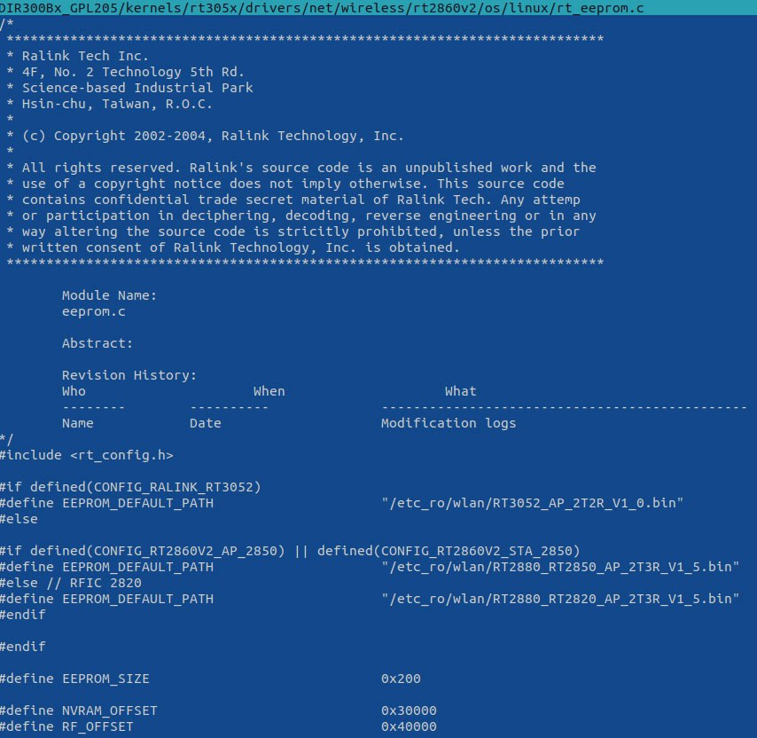

DIR-300 Rev B3 build openwrt and fix wifi.
Сборка openwrt для dir-300 rev.b3 rt3050f (rt3350).
Роутер DIR-300 ревизия B3 имеет подкрышкой внутри процессор RT3050F так написано на маркировке чипа, но пишут/определяется он как 3350 который имеет некоторые различия с 3050 но в целом совместим с ним. Для прошивок openwrt нету конфигурации dir-300 для ревизии b3, поэтому можно прошить или собрать ревизию b1, либо конфигурацию/прошивку от полного клона dir-600 такой же ревизии b1.
При работе прошивки openwrt от b1 возникает проблема, не работает модуль wifi. В dmesg ядра можно увидеть вот такое сообщение:
Если посмотреть opensource исходники старых прошивок от dlink с ftp.dlink.com то можно найти там драйвер “2860v2” с которым модуль wifi работает нормально:

В нём можно увидеть константу RF_OFFSET 0x40000 которая как бы намекает где храниться eeprom для радио модуля(wifi).
Если же мы посмотрим dts конфигурацию ядра openwrt для dir-300 b1 тут https://github.com/openwrt/openwrt/blob/openwrt-19.07/target/linux/ramips/dts/DIR-300-B1.dts
То увидем что &wmac ralink,mtd-eeprom указывает на devdata+0x4000, а devdata располагается по адресу 0x30000 что не равняется смещению 0x40000 как в нашей константе RF_OFFSET выше из старой прошивке.
cfi@1f000000 {
...skip...
partitions {
...skip...
devdata: partition@30000 {
label = "devdata";
reg = <0x30000 0x10000>;
read-only;
};
factory: partition@40000 {
label = "devconf";
reg = <0x40000 0x10000>;
read-only;
};
...skip...
}
....
&wmac {
ralink,mtd-eeprom = <&devdata 0x4000>;
};
Следовательно делаем вывод что нужно изменить адрес eeprom для wmac на 0x40000 просто исправив его так.
&wmac {
ralink,mtd-eeprom = <&factory 0x0>;
};
Секция factory у нас начинается с адреса 0x40000 что как раз соответствует нашему смещению.
Далее при сборке прошивке make menuconfig нужно выбрать измененный профиль и собрать прошивку командой make.
После сборки прошивки, радио модуль определяется и работает.
Но остается ещё одна проблема на данной модели роутера слишком мало флеш памяти 4мб, поэтому приходться убирать из прошивки практически всё.